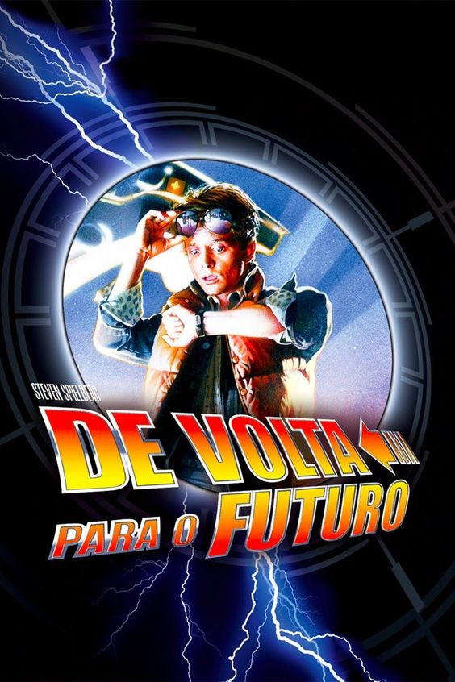
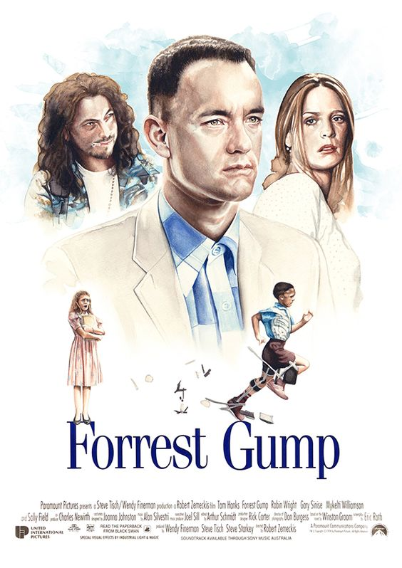
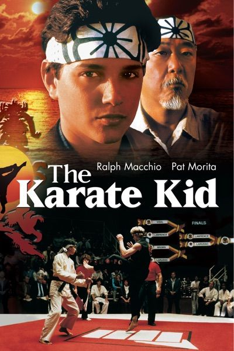

TOP 5 FILMES FAVORITOS
De Volta para o Futuro

Marty McFly, um adolescente de uma pequena cidade californiana, é transportado para a década de 1950 quando a experiência do excêntrico cientista Doc Brown dá errado.
Viajando no tempo em um carro modificado, Marty conhece versões jovens de seus pais e precisa fazer com que eles se apaixonem, ou então ele deixará de existir. Para complicar,
Marty precisa voltar para casa a tempo de salvar o cientista.
O Alto da Compadecida
O filme mostra as aventuras de João Grilo e Chicó, dois nordestinos pobres que vivem de golpes para sobreviver. Eles estão sempre enganando o povo de um pequeno vilarejo
no sertão da Paraíba,
inclusive o temido cangaceiro Severino de Aracaju, que os persegue pela região. Somente a aparição da Nossa Senhora poderá salvar esta dupla.
Forest Gump

Mesmo com o raciocínio lento, Forrest Gump nunca se sentiu desfavorecido. Graças ao apoio da mãe, ele teve uma vida normal. Seja no campo de futebol como um astro do esporte,
lutando no Vietnã ou como capitão de um barco de pesca de camarão, Forrest inspira a todos com seu otimismo. Mas a pessoa que Forrest mais ama pode ser a mais difícil de salvar,
seu amor de infância, a doce e perturbada Jenny.
Karate kid

Daniel Larusso e sua mãe recentemente se mudaram de Nova Jersey para o sul da Califórnia. Porém, Daniel não consegue se ambientar em sua nova morada, até que conhece Ali Mills,
uma garota atraente que gosta dele. Porém, a situação de Daniel se complica quando o ex-namorado de Ali, Johnny Lawrence, e sua gangue começam a atormentá-lo. Um dia, quando é
cercado pela gangue de Johnny, ele é salvo por um Miyagi, um veterano japonês mestre na arte do karatê. Disposto a ajudar Daniel, Miyagi resolve passar-lhe os ensinamentos do karatê,
para que ele possa se defender da gangue de Johnny.